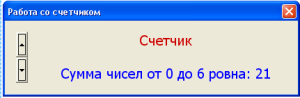

августа 24, 2015 admin
августа 24, 2015 admin Элемент управления SpinButton
августа 24, 2015 admin
Элемент управления VBA SpinButton добавляет на поверхность формы счетчик, как и для ScrollBar тут можно задавать как минимальное так и максимальное значение. Объект SpinButton эффективно использовать при работе с небольшими значениями. Он представляет из себя ту же полосу прокрутки с двумя кнопками, но без полосы прокрутки.

рис . 1.1 Элемент управления SpinButton на панели ToolBox

рис. 1.2 Элемент управления SpinButton на форме

рис. 1.3 Пример элемента управления SpinButton на форме
Как и с ScrollBar, мы будет использовать компонент VBA SpinButton для вычисления суммы чисел. Хотя более эффективно он может использоваться для вывода определенных данных. Например, объект vba будет хранить пять значений, при нажатии по кнопкам компонента в текстовом поле будет выводиться заданное значение.
Как и для ScrollBar, для SpinButton VBA свойства практически те же.
Базовые свойства класса SpinButton VBA
Max и Min – тут мы задаем целые значения, максимально и минимальное. Значения могут находиться в диапазоне от −32 767 до +32 767. Задавать числовые значения можно как в прямом так и в обратном порядке, например, Min=1, а Max=100 или наоборот, Min=100, а Max=1. Хотя, так как тут лучше использовать небольшие диапазоны, то порядок перебора будет не сильно актуален.
SmallChange – определяет шаг при нажатии на управляющие кнопки, по умолчанию данное свойство содержит числовое значение 1, вы можете задать собственный шаг в диапазоне от −32 767 до +32 767. В принципе, увеличивать значение шага актуально при математических вычислениях, так как в иных случаях, нам просто надо выбрать значение из счетчика – vba SpinButton.
Orientation – свойство позволяет задать ориентацию объекта класса VBA SpinButton, то есть, горизонтальное или вертикальное положение. Тут можно задавать три варианта значений: 1 – стоит по умолчанию и определяет положение согласно параметров формы, -1 – задает горизонтальную ориентацию и 0 – вертикальное положение. Для формы мы будем использовать вертикальное размещение.
Visible – не только для текущего элемента управления, но и для других, свойство задает видимость. То есть, при значении false мы можем спрятать объект, но в памяти он будет хранится, что бы вновь его показать, значение свойства меняем на true.
Value – хранит выбранное в текущий момент значение, значения выбираются из диапазона, заданного свойствами Min и Max.
При изменении данных для счетчика возникает событие Change, оно является ключевым для SpinButton VBA компонента.
Теперь напишем пример и создадим форму.
Добавьте в окно проектов форму с именем SpinForm и модуль с именем SpinModule, за добавление отвечает меню Insert. Что бы быстро открыть редактор VisualBasic нажмите комбинацию Alt + F11.
На поверхности формы расположите компоненты:
Label1 – будет содержать информативную надпись о том, что мы работаем с компонентом “Счетчик”
Label2 – будет содержать результат суммирования чисел от нуля до того значения, которое выбрано в компоненте VBA SpinButton
SpinButton1 – собственно, наш счетчик, который будет содержать диапазон от 0 до 10.
Помним, что все элементы управления находятся в окне ToolBox, вызвать его можно из меню View.
В редакторе кода для формы нам надо прописать следующие процедуры:
Private Sub ScrollBar1_Change()
Dim summ summ = 0
‘ вычесляем сумму чисел
For i = 1 To ScrollBar1.Value
summ = summ + i
Next
Label2.Caption = “Сумма чисел от 1 до ” & ScrollBar1.Value & ” ровна: ” & summ
End Sub
Private Sub UserForm_Initialize()
Dim summ summ = 0 ‘ вычесляем сумму чисел
For i = 1 To ScrollBar1.Value
summ = summ + i
Next
‘ параметры первого текстового поля
Label1.FontSize = 15
Label1.ForeColor = &HCD
Label1.TextAlign = fmTextAlignCenter
‘ параметры полосы прокрутки
ScrollBar1.Min = 1
ScrollBar1.Max = 100
‘ параметры второго текстового поля
Label2.FontSize = 15
Label2.ForeColor = &HFF0000
Label2.TextAlign = fmTextAlignCenter
Label2.Caption = “Сумма чисел от 1 до ” & ScrollBar1.Value & ” ровна: ” & sum
End Sub
SpinButton1_Change – обработка ключевого события. При нажатии на управляющие кнопки будет происходить обработка цикла for, в котором будет происходить вычисление суммы чисел от 0 до выбранного значения в данный момент. За выбранное значение отвечает свойство Value, а точнее, SpinButton1.Value. После вычисления суммы в свойство Caption второй метки будет записана информирующая строка со значением полученной суммы.
UserForm_Initialize – собственно, тут происходит определение свойств компонентов на форме при инициализации формы UserForm.
Ну что же, пример довольно простой да и статья не тянет на что-то гениальное. Мы просто рассмотрели объект VBA класса SpinButton, который позволяет добавлять счетчик на поверхность формы.